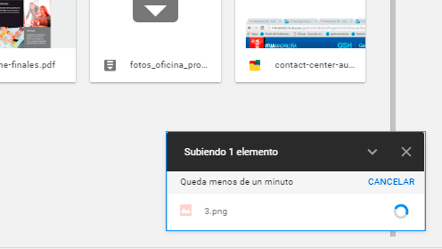
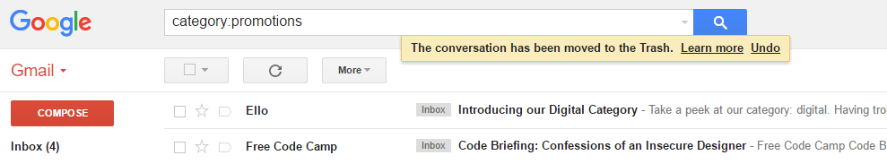
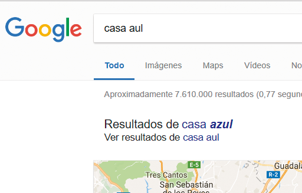
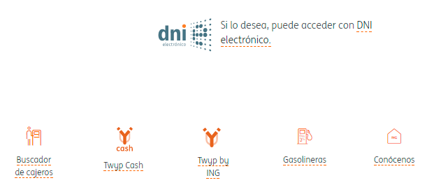
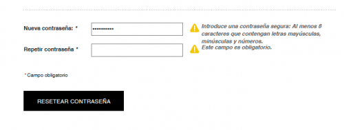
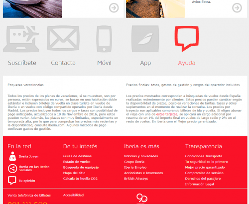

El sistema debe siempre mantener informado al usuario de lo que está ocurriendo

Ejemplo: al subir un archivo a Google Drive, el sistema nos indica que se está cargando y el tiempo restante.
2.Relación entre el sistema y el mundo real
El sitio web o aplicación tiene que utilizar el lenguaje del usuario, con expresiones y palabras que le resulten familiares. Además la información debe aparecer en un orden lógico y natural.
Ejemplo: en la página 404 de Lego, el mensaje es “página no encontrada”. El usuario no tiene por qué saber qué significa el error 404.
3.Control y libertad del usuario
En caso de elegir alguna opción del sitio web por error, el usuario agradecerá disponer de una “salida de emergencia” para abandonar el estado no deseado en que se halla. Debe poder deshacer o repetir una acción previamente realizada.

Ejemplo: En Gmail cuando envías un correo a la papelera te da la opción de deshacer la acción.
4.Consistencia y estándares
Es importante establecer convenciones lógicas y mantenerlas siempre. El usuario no tiene por qué saber que diferentes palabras, situaciones o acciones significan lo mismo.
Ejemplo: un estándar de un sitio web es la situación del logo en la cabecera, en la parte superior izquierda de la página. El icono de menú en móvil (llamado menú hamburguesa) también se ha convertido en un estándar y el usuario lo identifica fácilmente.
5.Prevención de errores
Ayuda al usuario a que no caiga en un error.

Ejemplo: Los buscadores proporcionan asistencia a los usuarios para que encuentren lo que están buscando, con la función autocompletar o con la alternativa de resultados.
6.Reconocimiento antes que recuerdo
Debemos hacer visibles acciones y opciones para que el usuario no tenga que recordar información entre distintas secciones o partes del sitio web o aplicación.

Ejemplo: los enlaces auxiliares de una home que incluyen texto más icono para reforzar el mensaje.
7.Flexibilidad y eficiencia de uso
Los aceleradores o atajos de teclado, por ejemplo, pueden hacer más rápida la interacción para usuarios expertos, de tal forma que el sitio web o aplicación sea útil tanto para usuarios básicos como avanzados.
Ejemplo: MS Exchange ofrece al usuario una configuración avanzada.
8.Estética y diseño minimalista
Las páginas no deben contener información innecesaria. Cada información extra compite con la información relevante y disminuye su visibilidad.
Ejemplo: la tendencia del diseño actual en la web. Apple, el adalid del minimalismo.
9.Ayudar a los usuarios a reconocer, diagnosticas y recuperarse de errores
Los mensajes de error se deben entregar en un lenguaje claro y simple, indicando en forma precisa el problema y sugerir una solución constructiva al problema.

Ejemplo: Este formulario te avisa en tiempo real de los errores que cometes al rellenarlo.
10.Ayuda y documentación
Aunque es mejor que el sitio web o aplicación pueda ser usado sin ayuda, puede ser necesario proveer cierto tipo de ayuda. En este caso, la ayuda debe ser fácil de localizar, especificar los pasos necesarios y no ser muy extensa.

Ejemplo: la web de Iberia reserva un espacio importante y fácilmente localizable para la opción de ayuda.